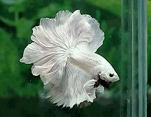

Peixes Betta(biologia)
Como cuidar
Na natureza
Aquários comunitários
Fatos que poucos sabem
Com bons cuidados eles vivem uma média de cinco anos.
Podem pular aproximadamente 3 centimetros pra fora da água
São os Peixes betta macho que fazem o ninho e cuidam dos filhotes.
Betas adoram explorar e nadar, odeiam aquarios pequenos.
São carnivoros e sim, podem te morder (tive um que me mordeu).
Eles podem aprender truques como qualque outro pet.
peixe1
peixe2